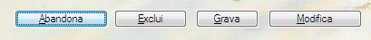

Linha de botões.
Line Buttons [ SMALL
]
[ LINE linha
]
[ COLUMN coluna
]
[ LINE-END linha-limite
]
[ COLUMN-END coluna-limite
]
[ CAPTION(1...26) texto-opção
]
[ OPTION
opção-default;opção-selecionada
]
[ OPTION-CHAR
mnemônico-do-botão-pressionado
]
[ TIMEOUT-ENABLE
| TIMEOUT-RETRY
| TIMEOUT-DISABLE
]
[ TIMEOUT-RETURN ;
retorno-tempo-limite-decorrido
]
SMALL
Indica
botões reduzidos com a altura de meia linha no modo gráfico
e sem moldura no modo caractere.
Linha de posicionamento do primeiro botão.
Coluna de posicionamento do primeiro
botão.
linha-limite
Maior número de linha que pode ser utilizada para o posicionamento do último botão.
Maior número de coluna que pode ser utilizada para o posicionamento do último botão.
Texto de até 34 caracteres a ser exibido em cada botão de opção (até 26) sendo que o caractere "~" indica que o caractere seguinte servirá de mnemônico de atalho.
Valor ou variável que Indica em qual das 26 opções deve estar inicialmente o foco.
Variável que receberá o retorno do número do botão selecionado pelo usuário, podendo retornar os valores de 1 a 26 ou zero caso o usuário tenha desistido da seleção.
mnemônico-do-botão-pressionado
Variável
alfanumérica de 1 byte que receberá o caractere
mnemônico do botão selecionada pelo usuário, ou
espaço caso não tenham sido definidos mnemônicos
ou o usuário tenha desistido da seleção.
TIMEOUT-ENABLE
Habilita o término por tempo de ociosidade decorrido. O botão default será automaticamente selecionado pelo sistema em função do limite de ociosidade declarado na configuração.
Habilita 5 segundos de espera para mensagens de comentários. Sem maiores consequências o processamento poderá prosseguir mesmo sem a intervenção ou conhecimento do usuário.
A intervenção do usuário será obrigatória e o processamento só prosseguirá ao ser selecionado um push-button manualmente.
retorno-tempo-limite-decorrido
Variável que receberá o retorno indicativo da ocorrência de limite de tempo decorrido (1 ou zero caso o usuário tenha selecionado uma opção manualmente).
A acentuação deve ser codificada com a página de código 850, os processadores de tela se encarregam de traduzir para o codificação apropriada a plataforma de execução:
|
Codificação COBOL |
|
EXEC COBOLware Line
Buttons SMALL |
|
Efeito no modo gráfico |
|
 |
|
Efeito no modo texto |
|
|
BoxFileSelect
BoxSelect
Object COMBO-BOX
Object
LIST-BOX
Send Message